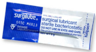
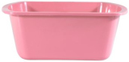
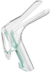
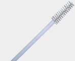

| Consent form |
 |
For explaining the procedure, risks, and benefits to the patient and getting their permission to proceed. |
| Timeout Sheet |
|
A checklist for doing timout. |
| Chucks pad |
 |
For placing used items during the procedure. |
| Lubricant |
 |
Water based. Applied to the speculum prior to insertion. |
| Wash basin |
 |
Fill with warm water and set the unopened speculum inside. Warm speculums improve patient comfort. |
| Speculum |
 |
A hinged instrument used to visualize the cervix. Warmed up and white-colored speculums are more tolerable. |
| Fox Swab |
|
Cotton-tipped swabs for removing mucus or blood, gently repositioning the cervix, and holding pressure on the puncture sites on the cervix after the tenaculum is removed. |
| Cytobrush |
 |
Can be used to try to coax the IUD string out of the uterus if it's close to the cervical os. |
| Ringed Forceps |
|
For grasping the IUD strings. |
| Hand Wipe |
 |
For cleaning hands and/or vulva after the procedure. |
| Panty liner |
 |
To be given to the patient after the procedure in case of spotting. |